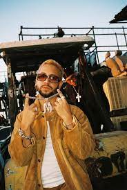

<!DOCTYPE html>
<html lang="en">
<head>
    <meta charset="UTF-8">
    <meta name="viewport" content="width=device-width, initial-scale=1.0">
    <meta http-equiv="X-UA-Compatible" content="ie=edge">
    <title>Document</title>
    <link rel="stylesheet" href="estilos.css">
</head>
<body>
    
</body>
</html>
</head>
<body>
   
    <div id="container"> </div>
    <header>
            <h1>MORA</h1>
    </header>
    <nav> 
        <ul> 
            <li>
<a href="index.html">Rels b</a>
            </li>
             <li>
<a href="cyril.html">Cyril Kamer </a>
            </li>
            <li>
<a href="mora.html">Mora </a>
            </li>
            <li>
<a href="eladiocarrion.html">Eladio Carrion </a>
            </li>
        </ul>
    </nav>
    

<div class="clearfix"></div>


    <section id="content">
 <article class="article">
<h2> BIOGRAFIA </h2>
<br>
<p> Gabriel Armando Mora Quintero (Bayamón, 18 de abril de 1996), conocido por su nombre artístico Mora, es un cantante, compositor y productor musical puertorriqueño. </p>
<br>
<p> Es reconocido por producir, componer y colaborar en sencillos como «Una Vez» o recientemente «Hibiki» junto a Bad Bunny, «512» junto a Jhayco, «La Inocente» junto a Feid, «Volando Remix» junto a Bad Bunny y Sech, «Pensabas» junto a Eladio Carrión, Brray y Joyce Santana, y «Tuyo».
     </p>
 <br>   
<p> La corta edad de seis años de edad comenzó a tocar la flauta y luego aprendió tocar el piano. Estudió en una escuela elemental Montessori, cuyo enfoque es más en las artes que en estudios tradicionales. En su adolescencia practicó los deportes baloncesto y tenis en el Colegio San José en Río Piedras, pero nunca dejó la música. Estudió Administración de empresas en la Universidad de Puerto Rico, fue aceptado y dejó la carrera poco tiempo después. También asistió a Berklee College of Music, la cual al poco tiempo desistió.2​ Finalmente probaría suerte por cuenta propia en 2017, lanzando entonces sus primeras canciones. </p>
    <br>
    <p> Incursionó en la música en el año 2017, uno de sus primeros sencillos se título «Provocándome». Le siguió, ese mismo año, «Señorita» junto a Rafa Pabön y luego vino el exitoso remix de «Pensabas» con Eladio Carrión, Brray y Joyce Santana. Los éxitos no pararon ahí. Como independiente, Mora también lanzó «Nunca seremos», «Hasta cuándo» y «Noche loca». Posterior a estos lanzamientos, el artista puertorriqueño firmó contrato con la compañía discográfica Rimas Music en 2018.
    2018-2020: Rimas Music y «Una vez».</p>
    
    
     </article>
    </section>
    <aside>
        
    </aside>
    <div class="clearfix"></div>
    <footer> Carla Navarro </footer>
</body>
</html>
